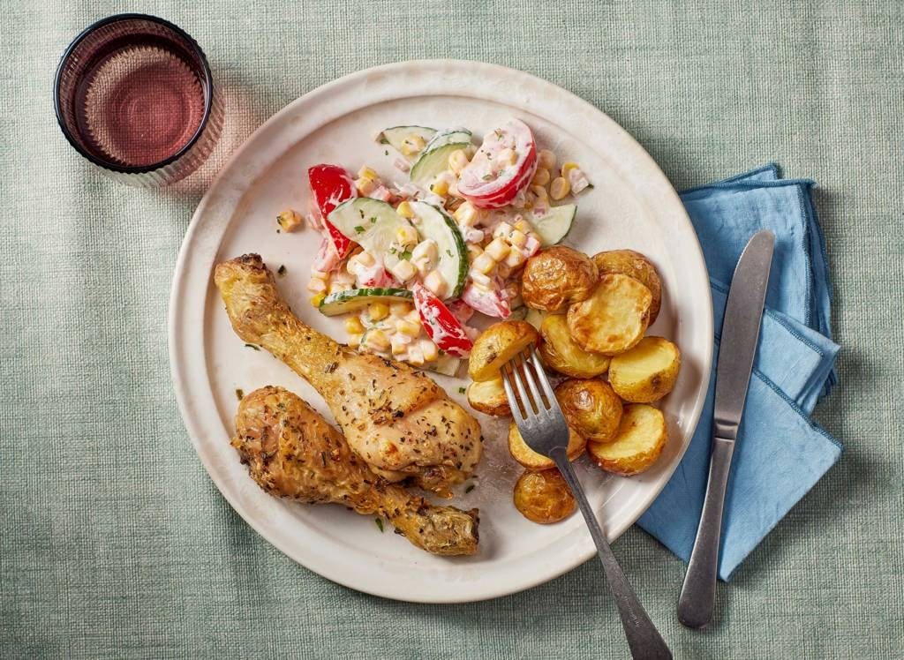

Kip met krieltjes en gemengde salade

Crispy kip en goudgele krieltjes uit de airfryer. Met een frisse gemengde salade on the side. Minimale moeite, maximale smaak. En nog gezond ook
voorbereidingstijd:
wacht tijd:
totaal tijd:
15 MIN
20 MIN
35 MIN
ingrediënten
- 1 kilo vastkokende krieltjes (schoongeboend)
- 4 el milde olijfolie
- 8 kipdrumsticks
- 1 el gedroogde dragon
- 340 g mais
- 1 sjalot
- 1 komkommer
- 300 g trostomaten
- 50 g zuivelspread
- 2 el natuurazijn
benodigheden
- airfryer XL
kook stappen
- Halveer de ongeschilde krieltjes en schep om met 1 el olie en peper. Bak 10 min. in de airfryer op 200 °C.
- Smeer ondertussen de drumsticks in met 1 el olie en bestrooi met een 1/2 el dragon, peper en eventueel zout.
- Leg de drumsticks op de krieltjes. Bak 30 min. op 180 °C tot de kip gaar is en de krieltjes goudgeel en knapperig zijn. Keer de kip halverwege.
- Giet ondertussen de mais af. Snipper de sjalot. Snijd de komkommer in halve plakjes en de tomaat in dunne parten. Meng de rest van de olie met de zuivelspread, azijn en de rest van de dragon tot een dressing. Breng op smaak met peper.
- Meng de dressing door de groenten. Serveer de kip en krieltjes met de salade.